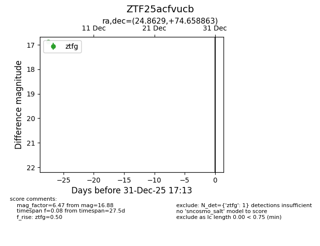
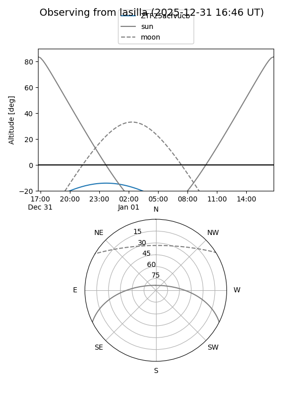
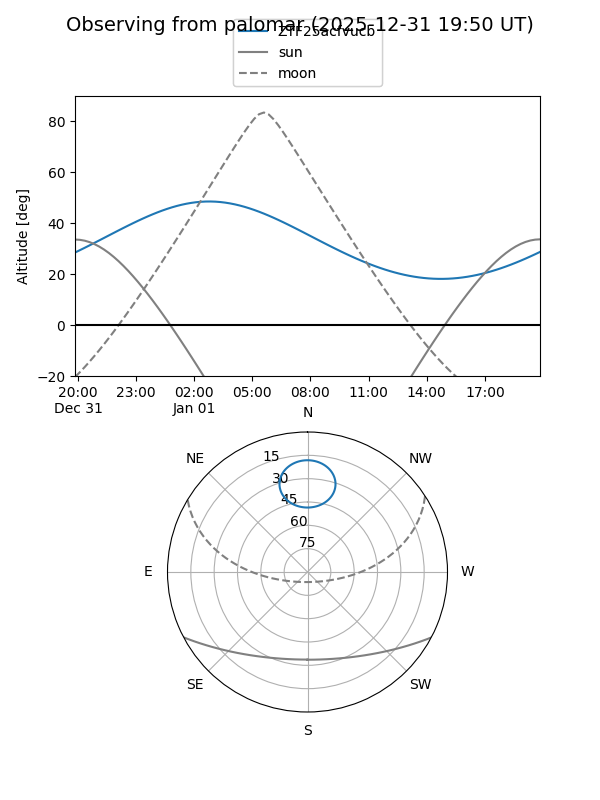

ZTF25acfvucb
Target ZTF25acfvucb at 2025-12-31 16:59
Aliases and brokers:
FINK:
Lasair:
ALeRCE:
alt names
ZTF25acfvucb (ztf,fink_ztf)
Coordinates:
equatorial (ra, dec) = 24.8629,+74.65886
equatorial (HMS+DMS) = 01:39:27.11,+74:39:31.91
galactic (l, b) = (126.1576,+12.08861)
Flags:
Photometry:
last ztfg=16.88
1 ztfg detections
Lightcurve

Visibility


Additional plots